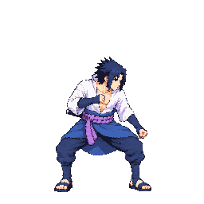
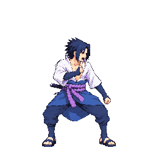
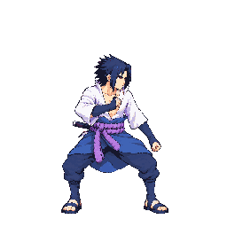
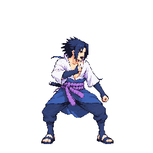
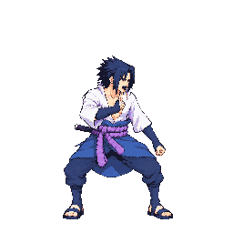
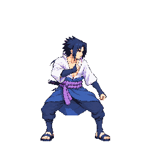
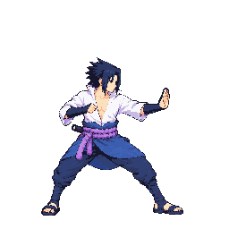

Approved by the user as drawn via Claude relay charge #10: “Approve v15”. Claude owns the remaining in-game integration and merge check.
This page shows the exact 48-color packed cells from the branch atlas. The user saw the animation at game timing before approving.
Candidate playback · gather, release, then held loop

Frame durations: 70, 90, then 110 ms. Frames f2–f5 loop from f2.
Packed cells at 1×





At 2×
Approved reference cells

Packed-cell QA
Claude's packed-cell review found body and head placement 0 px across f2-f5; feet are stable within 2 px at the f5 sandal edge.
The f3 H=1.077 reading follows lifted hair and a trailing strand; the face matches idle and the jaw measures about 17 px in both.
The user saw game-timed playback before approval. Astra's earlier uncertain landmark note is retained unchanged as historical QA; see Claude's follow-up scale check.